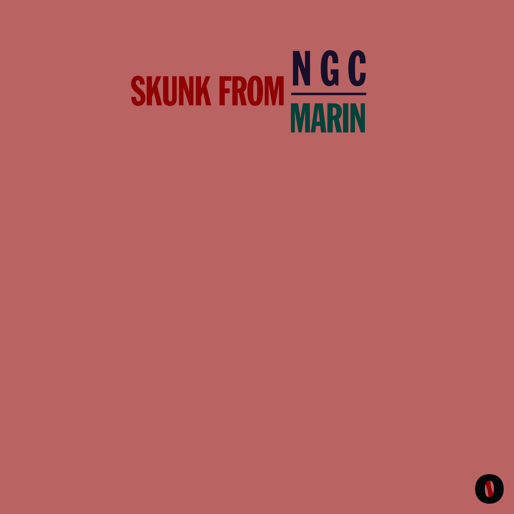

K.K. Slider Turn Down for What
Young Thug Fifth Day Dead
Young Thug Hate the Game
Goldie Hyena
Travis Guide How Thrasher Has Ruined My Brain
Toby Fox Hopes and Dreams
Chicago Melt MPC Junglism
Adam Buxton Bale Jingle
Nacho Marty Meyer Kawai GMega XC-3 LX (1993) Part 1
Gang Gang Dance Vacuum
Dean Blunt Felony / Stalker
Aphex Twin Windowlicker [Hip-Hop Remix 30 Min]
Toby Fox A Town Called Hometown
Howard Stern Gary Joined a Scotch Lovers Facebook Group
King Crimson Model Man
Full Body 2 Fifty Heaven
MrFunnyTi Roland MKS-7 Super Quartet Part 2
Travis Guide Names of the Beats for My Next Album
Nacho Marty Meyer Yamaha TG33 (1990)
Ghost Bomber Vague Jazz
MIDERA Roland SH-101 Random Musings
The Cure Dressing Up
The Cure Dressing Up (Studio Alt Mix)
The Beach Boys Cool, Cool Water
Howard Stern Introducing Green Day